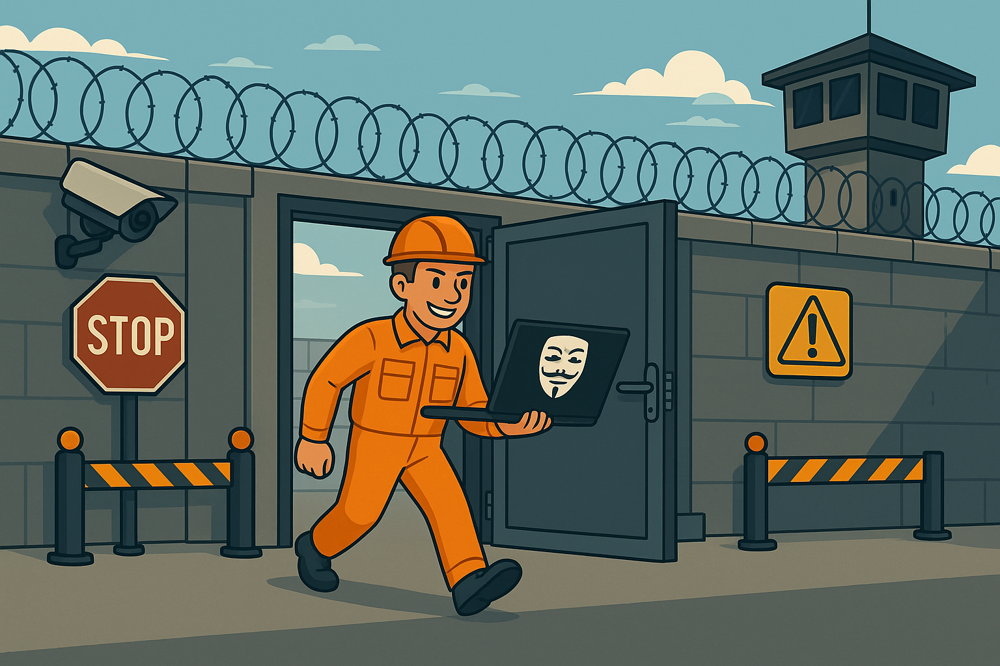
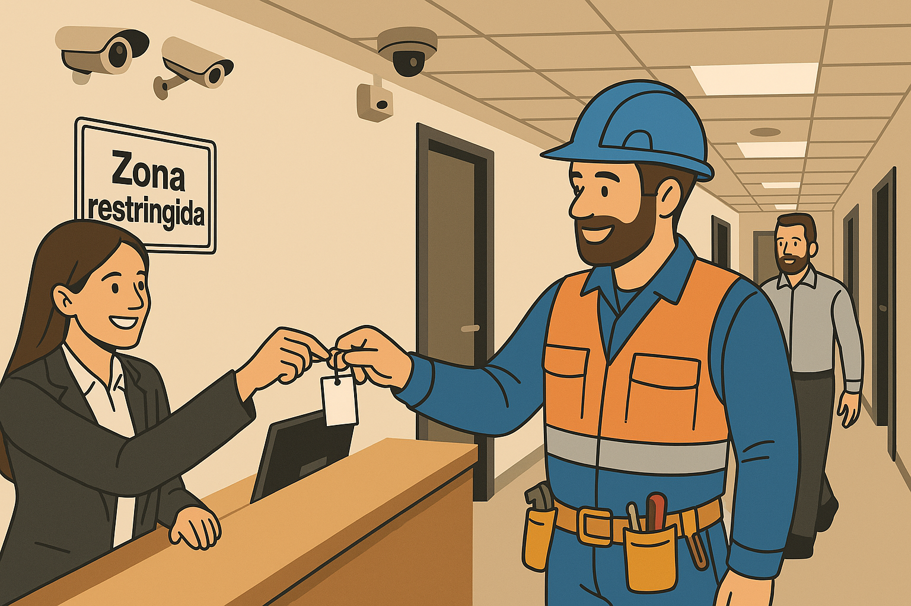

Tema 09 - Seguridad física y control de acceso1. Introducción2. Riesgos físicos más comunes3. Medidas básicas de protección4. Control de visitas y personal externo5. Errores típicos y casos reales6. 🧪Test de repaso

Cuando pensamos en seguridad informática, lo primero que se nos viene a la cabeza son antivirus, firewalls o contraseñas. Pero muchas veces se olvida algo fundamental: la seguridad física.
¿De qué sirve tener el mejor sistema del mundo si alguien puede entrar a la oficina y llevarse un portátil, desenchufar un servidor o pinchar un USB malicioso?
La seguridad física se encarga de proteger los equipos, redes y dispositivos frente a amenazas del mundo real: desde robos hasta apagones. Es el primer muro de defensa. Si falla, lo demás no sirve de mucho.
Important
Sin seguridad física, no hay seguridad informática. ¡Así de simple!
En el mundo real también hay amenazas que pueden poner en peligro la seguridad de los sistemas. Podemos dividirlas en dos grandes grupos:
🤦Riesgos de origen humano:
Robos o hurtos de equipos (portátiles, discos duros, USB...)
Acceso físico no autorizado a salas o despachos
Sabotaje por parte de empleados o intrusos
Manipulación de cables, routers o servidores
🔥Riesgos ambientales o accidentales:
Incendios
Inundaciones
Cortes eléctricos o picos de tensión
Terremotos, tormentas, humedad excesiva...
Warning
A veces un simple apagón o una gotera puede ser tan destructivo como un virus informático.
Para reducir los riesgos físicos, existen medidas sencillas pero efectivas. No hacen magia, pero bien aplicadas pueden marcar la diferencia.
🚦Control de accesos físicos:
Puertas con llave o tarjeta
Cerraduras electrónicas o biometría (huella, iris)
Zonas restringidas solo para personal autorizado
🚨Videovigilancia y alarmas:
Cámaras de seguridad en pasillos, entradas y salas críticas
Alarmas conectadas a centralitas o a la policía
Señalización visible: ¡disuadir también es proteger!
🔐Protección de equipos sensibles:
Racks cerrados con llave para servidores
SAI (Sistemas de Alimentación Ininterrumpida) para evitar daños por apagones
Sistemas de climatización para evitar sobrecalentamientos
👮Presencia de vigilantes de seguridad:
Control de entradas y salidas
Supervisión de zonas sensibles
Coordinación con personal de sistemas
Tip
A veces, un candado o una cámara bien colocada vale más que mil líneas de código.
En muchas empresas se cuida mucho la seguridad digital… pero cualquiera puede entrar a la oficina diciendo que viene a revisar la fotocopiadora.
Y es que los visitantes mal gestionados pueden convertirse en una amenaza seria, incluso sin quererlo.

¿Quién cuenta como personal externo?
Visitas puntuales: clientes, entrevistas, socios, comerciales...
Técnicos: electricidad, informática, climatización, fotocopiadoras, etc.
Empresas contratadas: limpieza, vigilancia, catering...
Personal en prácticas o recién incorporado que aún no tiene acceso total
Buenas prácticas para evitar sustos:
Registro obligatorio al entrar: nombre, DNI, empresa, motivo, hora de entrada y salida.
Uso de acreditaciones visibles: si no lleva tarjeta o distintivo, ¡no debería estar ahí!
Acompañamiento siempre que no sea personal autorizado.
Zonas claramente separadas: recepción, zona de trabajo, zona crítica (servidores, documentos, salas técnicas).
Supervisar lo que traen y lo que se llevan: cuidado con maletines, pendrives, discos duros o móviles.
Prohibido conectar dispositivos sin autorización expresa (cargar un móvil en un PC ajeno puede ser una puerta trasera).
Escenario típico de error:
Un técnico de mantenimiento entra a cambiar una lámpara. Nadie lo acompaña. De camino a la sala, pasa por el despacho del jefe y ve la pantalla desbloqueada con el correo abierto… y nadie se entera.
Caution
Nunca bajes la guardia con un "solo vengo a mirar una cosa". Los fallos más simples son los más aprovechados.
Por muy buenas que sean las medidas, si no se aplican bien o se relajan con el tiempo, la seguridad física se convierte en una ilusión.
Errores habituales en muchas empresas:
Puertas que siempre quedan abiertas “porque es más cómodo”
Cámaras desconectadas o falsas
Tarjetas de acceso que se prestan entre empleados
Equipos importantes (servidores, routers...) en salas sin cerradura
Visitantes que entran sin ser identificados ni acompañados
SAI sin mantenimiento, que no funciona cuando hace falta
Documentos confidenciales a la vista o en papeleras sin destruir
Ejemplo real (inspirado en hechos frecuentes):
Una empresa con todo en regla: firewall, antivirus, backups... pero el servidor estaba en un cuartito sin cerradura. Un día, alguien entró, se llevó el disco duro... y se acabó el negocio.
Warning
La seguridad no falla solo por lo que no se hace, también por lo que se deja de hacer con el tiempo.
1. ¿Cuál de los siguientes es un riesgo físico de tipo ambiental?
a) Acceso sin autorización a una sala
b) Sabotaje de un empleado
c) Incendio en el edificio
d) Robo de un portátil
2. ¿Qué medida sirve para controlar el acceso físico a zonas restringidas?
a) Contraseñas seguras
b) Cerraduras con tarjeta
c) Antivirus actualizado
d) Copias de seguridad
3. ¿Cuál de estas prácticas representa un error común de seguridad física?
a) Cámaras desconectadas por ahorro energético
b) Credenciales visibles para el personal externo
c) Supervisar a las visitas
d) Zonas diferenciadas por nivel de acceso
4. ¿Qué debe hacerse con los visitantes al entrar en una empresa?
a) Dejarles pasar sin supervisión si parecen fiables
b) Acompañarlos y registrar sus datos
c) Pedirles que apaguen el móvil
d) Permitirles moverse por todas las zonas
1. c)
Un incendio es un riesgo físico ambiental.
2. b)
Las cerraduras con tarjeta son una medida de control de acceso físico.
3. a)
Tener cámaras desconectadas es un fallo habitual de seguridad.
4. b)
A los visitantes hay que registrarlos y acompañarlos en todo momento.